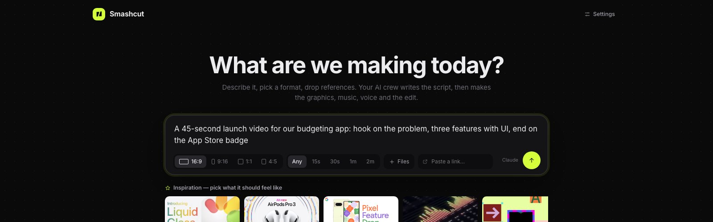
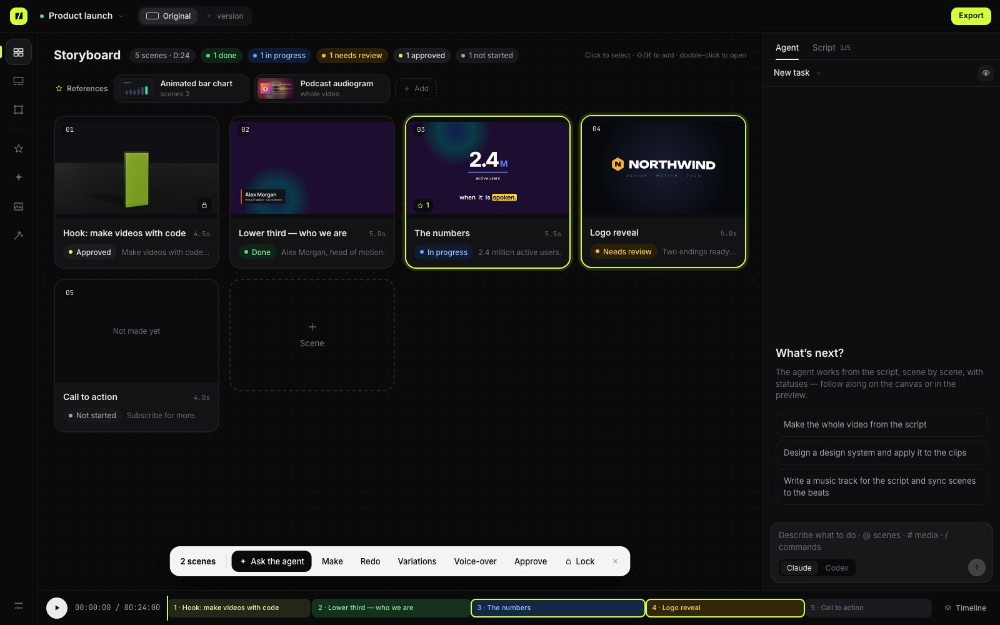
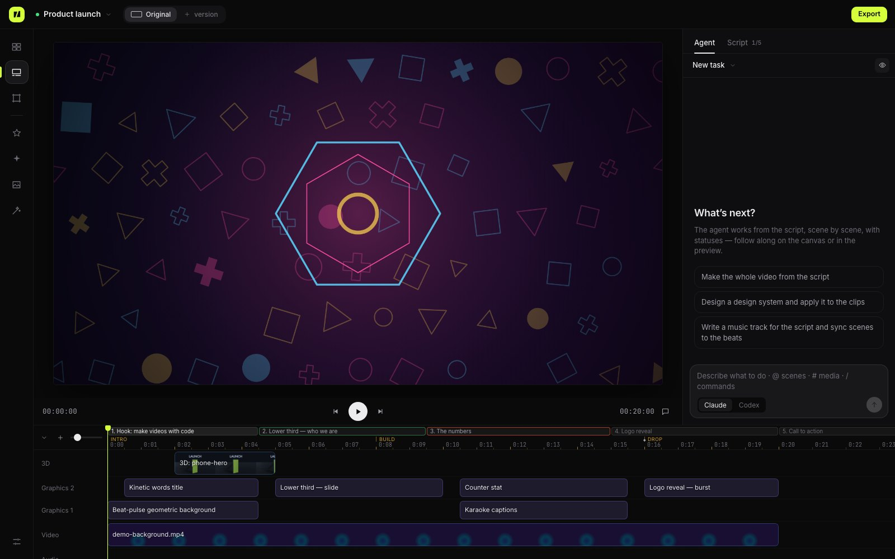

Smashcut is an open-source AI video production studio. Claude Code and Codex agents write the script, then make the motion graphics, music, voice-over, 3D shots and the edit — locally, as code you can change.

Not a prompt-to-clip toy: a full editor where agents plan, build, review and fix — and you stay in control of every frame.
The agent writes the script — scenes, copy, timing, visuals — then works scene by scene with live statuses. Approve or lock what's done.
HTML/CSS/GSAP clips render frame-exact: exact text, numbers, charts and logos. 24 transitions, 17 effects, masks, blend modes.
Story first, audio as the clock, easing by role, read time, safe areas, seams and sound levels — distilled from measured references.
Music as code with Tone.js. Voice-over as a process: numbers spelled out, stress marks, pauses, takes with a pace check.
Three.js clips for logos, type, products and particles in space — live in the preview, no render step. Blender for physics and photoreal shots, rendered in stages: mock → look → final.
Camera, planar and object tracking: graphics glued to the world, screen replacement with perspective, auto-reframe to 9:16.
57 techniques with guides and 108 curated real-world motion pieces with breakdowns — bind them to scenes as references.
Runs on your machine with your agent subscription. Projects are folders with git history. MIT licensed.
Select scenes and say what to change. Pin comments on frames. Sub-agents build scenes in parallel; a review loop checks numbers and contact sheets before the agent says "done".


Multi-track timeline, beat-synced cuts, versions for other languages and formats, and export to MP4, ProRes 4444 with alpha, WebM or GIF.
| Smashcut | Remotion | Video generators | ComfyUI | After Effects | |
|---|---|---|---|---|---|
| Made by AI agents from a brief | Yes | You write code | Prompt → clip | Node graph | Manual |
| Exact text, numbers, logos | Yes | Yes | Often garbled | Hard | Yes |
| Edit a detail without regenerating | Yes | Yes | No | Partly | Yes |
| Whole video: script, music, voice, edit | Yes | DIY | Clips only | DIY | Manual |
| Runs locally | Yes | Yes | Cloud | Yes (GPU) | Yes |
| Open source | MIT | Source-available | No | GPL | No |
Yes — MIT licensed. It uses the Claude Code or Codex subscription you already have; optional services (ElevenLabs, video generators) use your own keys.
No. Describe and direct the video in plain language; agents write the code. Developers can open and edit everything.
Yes: 9:16, 1:1, 4:5 and 16:9 with platform safe areas, captions and versions per format.
It shares the idea that video is code, but Smashcut is a full editor where AI agents do the work: script, storyboard, timeline, music, voice-over, 3D, tracking and review.
No. Everything runs locally; only your agent CLI talks to its provider, plus optional services you configure.